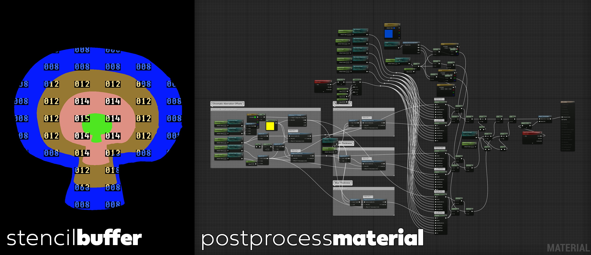

ryanbaier.com

In 2021 I once again worked with Bolder Games and Walt Disney Imagineering to create an installation for Disneyland Paris in the Pym Kitchen at the Avenger’s Campus. The Pym Kitchen is based on the Marvel Ant-Man property where Pym particles enable matter to be made larger or smaller. Disney wanted to show food being enlarged or shrunk by Pym particles in a quantum tunnel which would be accomplished by three monitors; two showing the food entering and exiting the tunnel, and one containing the tunnel itself. The monitors had a lens over them that would add a physicality to the effect. I worked with my former NetDevil colleague Eric Claeys and Gabriel Priske.
Initially I ran some tests in After Effects, but after factoring in workflows, rendering times, and iterations for three monitors, we decided to create this installation in Unreal Engine. Unreal not only saved us a lot of render time, but it also enabled a lot of very quick changes to our scene and the foods we were using. My responsibilities were creating the shrink/grow effects and surrounding effects in the quantum tunnel as well as setting up a render pipeline for previews and final deliverables.
After moving to Unreal the first trick was how to easily get the outline of the objects being shrunk or grown. I started with a two step process of rendering out of Unreal with Cryptomattes and using those mattes to create the outline effect in After Effects. This looked great but I felt like it would be much better and easier to do it all in-engine. I ran another test where I rendered the outline out of After Effects and brought that into Unreal as a layer. This also worked great, but it would require an After Effects render for each object. I wanted to create something that could work dynamically on any object that was thrown in and to try to keep everything in Unreal. My solution was to use a post-process effect and the custom stencil buffer to get the mask of each object as it was shrunk or grown and to use that mask with some logic in the material editor to create multiple outlines with the timings controlled by keyframes in the Sequencer. The end effect worked just like we wanted and let us use any object we wanted including some Spider-Bot gags.
Finally, I also created the render pipeline for delivering the finals. Since the installation was for three monitors the render needed three cameras rendered in three 4K EXR sequences in an ACEScg color space. Unreal has great support for rendering movies and image sequences as well as support for OpenColorIO which enabled the ACEScg color space that we rendered to EXR sequences for delivery.